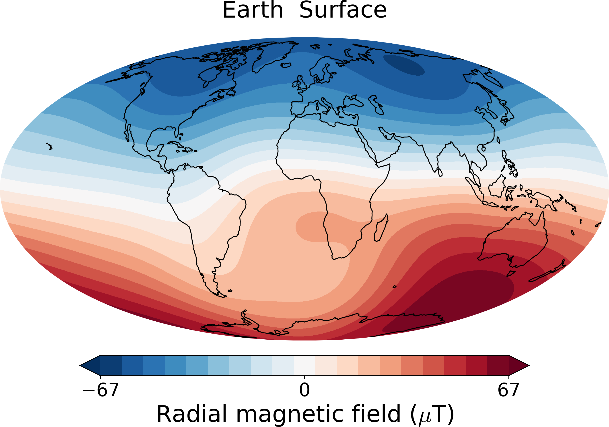
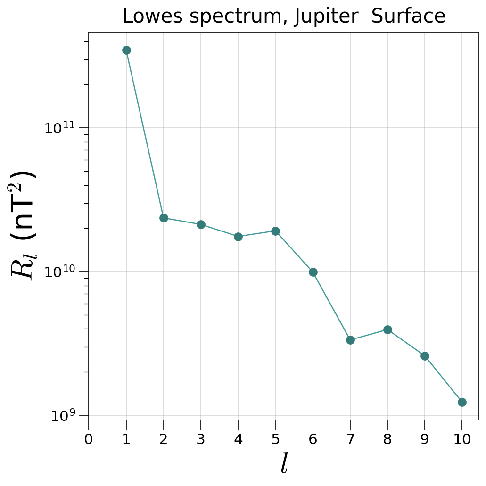
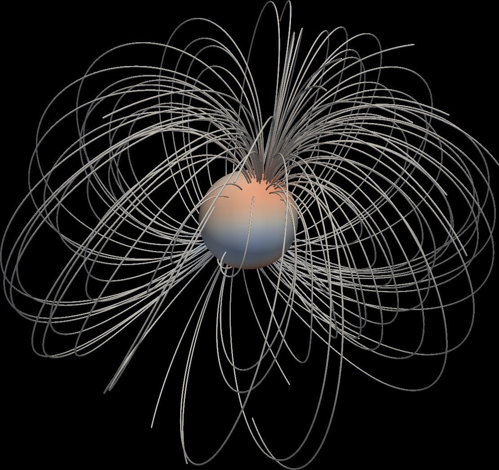
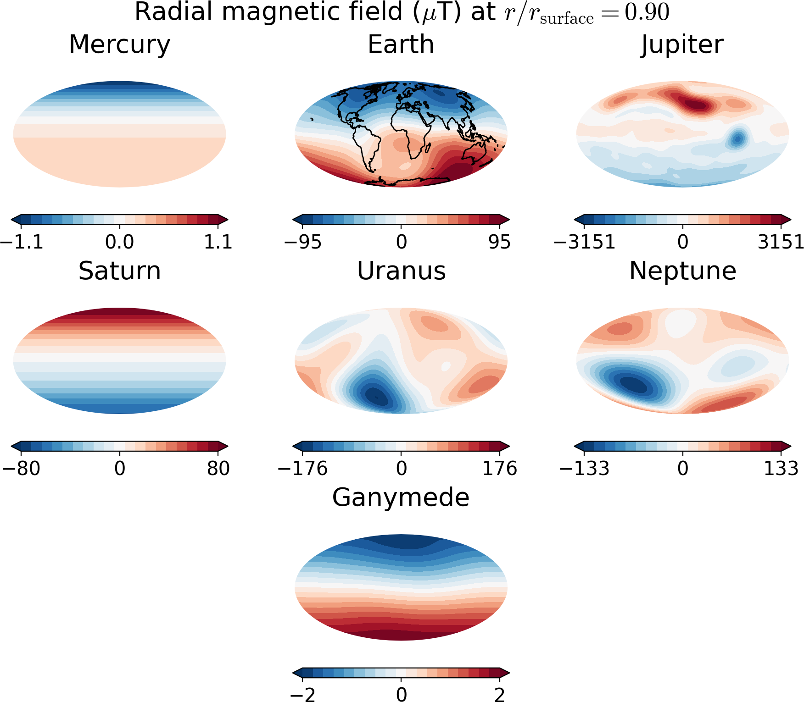

3. Features and examples¶
3.1. The Planet class¶
This gives access to all the relevant properties of a planet and has methods to plot the field and write a vts file for 3D visualization. Usage:
from planetmagfields import Planet
p = Planet(name='earth')
This displays the some information about the planet
Planet: Earth
l_max = 13
Dipole tilt (degrees) = -9.410531
and gives access to variables associated with the planet such as:
p.lmax: maximum spherical harmonic degree till which data is available
p.glm,p.hlm: the Gauss coefficients
p.Br: computed radial magnetic field at surface
p.dipTheta: dipole tilt with respect to the rotation axis
p.dipPhi: dipole longitude ( in case zero longitude is known, applicable to Earth )
p.idx: indices to get values of Gauss coefficients
p.model: the magnetic field model used. Available models can be obtained using theget_modelsfunction. Selects the latest available model when unspecified.
p.unit: The unit for outputs for magnetic field components and plots, by default microTeslas. Can be nanoTeslas, microTeslas and Gauss and can be specified using specific strings ‘muT’, ‘nuT’ or ‘Gauss’ (case independent) while calling theplanetmagfields.Planetclass. More details in Units.
Example using IPython:
In [1]: from planetmagfields import Planet
In [2]: p = Planet(name='jupiter',model='jrm09')
Planet: Jupiter
Model: jrm09
l_max = 10
Dipole tilt (degrees) = 10.307870
In [3]: p.glm[p.idx[2,0]] # g20 in nT
Out[3]: 11670.4
In [4]: p.hlm[p.idx[4,2]] # h42 in nT
Out[4]: 27811.2
as well as the functions:
3.1.1. Planet.plot()¶
This function plots a 2D surface plot of the radial magnetic field at radius r given in terms of the surface radius. For example,
from planetmagfields import Planet
p = Planet(name='earth')
p.plot(r=1,proj='Mollweide')
produces the info mentioned above first and then the following plot of Earth’s magnetic field using a Mollweide projection
{kind=link}
while
from planetmagfields import Planet
p = Planet(name='jupiter',model='jrm09')
p.plot(r=0.85,proj='Mollweide')
produces the following info about Jupiter and then plot that follows
Planet: Jupiter
l_max = 10
Dipole tilt (degrees) = 10.307870
{kind=link}
This can be compared with Fig. 1 g from Moore et al. 2018 .
3.1.2. Planet.spec()¶
This function computes the Lowes spectrum of a planet at a given radius. It adds an array p.emag_spec which contains the energy at different spherical harmonic degrees and two variables p.dipolarity and p.dip_tot which provide the fraction of energies in the axial dipole and the total dipole with respect to the total energy at all degrees. In addition, it provides equatorially symmetric and antisymmetric as well as axisymmetric contributions to the Lowes energy spectrum. Usage example:
from planetmagfields import Planet
p = Planet(name='jupiter',model='jrm33')
p.spec()
will provide variables
In [22]: p.dipolarity
Out[22]: 0.747204704567949
In [23]: p.dip_tot
Out[23]: 0.7719205020945153
In [24]: p.emag_spec
Out[24]:
array([0.00000000e+00, 3.47735401e+11, 2.36340427e+10, 2.12851283e+10,
1.75661770e+10, 1.92219833e+10, 9.91200748e+09, 3.34535482e+09,
3.95317968e+09, 2.59333418e+09, 1.23423771e+09])
In [25]: p.emag_symm/p.emag_tot # Symmetric part
Out[25]: 0.16062699807374292
In [26]: p.emag_antisymm/p.emag_tot # Anti-symmetric part
Out[26]: 0.8393730019262573
In [27]: p.emag_axi/p.emag_tot # Axisymmetric part
Out[27]: 0.7768733455808511
and will produce Jupiter’s surface spectrum:
{kind=link}
The plotting can be suppressed setting the logical p.spec(iplot=False). A different radius other than surface can be selected using the p.spec(r=0.8) parameter. API documentation : Planet.spec()
3.1.3. Planet.writeVtsFile()¶
This function writes a vts file that can be used to produce 3D visualizations of field lines with Paraview/VisIt. Usage:
p.writeVtsFile(potExtra=True, ratio_out=2, nrout=32)
where,
potExtra: bool, whether to use potential extrapolation. This uses the SHTns library for spherical harmonic transforms.
ratio_out: float, radius till which the field would be extrapolated in terms of the surface radius
nrout: radial resolution for extrapolation
Example of a 3D image produced using Paraview for Neptune’s field, extrapolated till 5 times the surface radius is given below.
{kind=link}
3.2. Field filtering using Planet.plot_filt¶
The planet class also provides a function for producing a filtered view of the radial magnetic field using the function plot_filt.
This function can take in either an arbitrary array of spherical harmonic degrees and orders or cut-off values. This is illustrated
below with examples, assuming the user is in the repository directory.
3.2.1. Saturn’s small-scale magnetic field¶
Here we plot Saturn’s magnetic field at a depth of 0.75 planetary radius for spherical harmonic degrees > 3.
from planetmagfields import Planet
p = Planet(name='saturn')
p.plot_filt(r=0.75,lCutMin=4,proj='Mollweide')
{kind=link}
Compare this with Fig. 20 B from Cao et al. 2020 .
3.2.2. Jupiter’s surface field¶
Here we filter out Jupiter’s surface field restricted to degrees 1,2,3 and order 3.
from planetmagfields import Planet
p = Planet(name='jupiter',model='jrm09')
p.plot_filt(r=1,larr=[1,2,3],marr=[3],proj='Mollweide')
{kind=link}
3.2.3. Earth’s smaller scale surface field¶
We filter the surface field to degrees > 4 and orders > 3.
from planetmagfields import Planet
p = Planet(name='earth')
p.plot_filt(r=1,lCutMin=5,mmin=4,proj='Mollweide')
{kind=link}
3.3. Potential extrapolation¶
Warning
Potential extrapolation prior to v1.5.1 had a bug and the extrapolated fields would be overestimated. Please take care!
The Planet.extrapolate performs a potential extrapolation of a planet’s magnetic field. The functions are present in the potextra module. This uses the SHTns library for spherical harmonic transforms.
Usage example:
import numpy as np
from planetmagfields import Planet
p = Planet('saturn')
ratio_out = 5 # Ratio (> 1) in terms of surface radius to which to extrapolate
nrout = 32 # Number of grid points in radius between 1 and ratio_out
rout = np.linspace(1,ratio_out,nrout)
p.extrapolate(rout) #Gives you three arrays p.br_ex, p.btheta_ex, p.bphi_ex
3.4. Quickplot using the magField.py script¶
$ ./magField.py --help
usage: magField.py [-h] [-p PLANET] [-r R] [-c CMAP] [-l LEVELS] [-m PROJ] [-o MODEL]
Script for easy plotting of planetary magnetic field.
optional arguments:
-h, --help show this help message and exit
-p PLANET, --planet PLANET
Planet name (default : earth)
-r R, --radius R Radial level scaled to planetary radius (default : 1)
-c CMAP, --cmap CMAP Colormap of plot (default : RdBu_r)
-l LEVELS, --levels LEVELS
Number of contour levels (default : 20)
-m PROJ, --mapproj PROJ
Type of map projection (default : Mollweide)
-o MODEL, --model MODEL
Model to be used, uses the latest model by default (default : None)
This will plot the radial magnetic field of a planet (any of the names from the list below, case insensitive) at a radius given in terms of the surface radius with a given map projection. The default is the surface field. More details are available through the help.
For example,
$ ./magField.py -p earth -m Mollweide
displays the same information as above about Earth’s field and produces the surface field of Earth while
$ ./magField.py -p jupiter -r 0.85 -m Mollweide -o jrm09
produces the same plot of Jupiter’s field as shown before.
$ ./magField.py -p all -r <radius> -m <projection>
would produce a table of information about dipole tilt for each planet and magnetic field maps of all different planets at the given radius in a single figure.
For example:
$ ./magField.py -p all -r 0.9 -m Mollweide
would give
|=========|======|=======|
|Planet | Theta| Phi |
|=========|======|=======|
|Mercury | 0.0 | 0.0 |
|Earth | -9.4 | -72.7 |
|Jupiter | 10.3 | -16.6 |
|Saturn | 0.0 | 0.0 |
|Uranus | 58.6 | -53.6 |
|Neptune | 46.9 | -72.0 |
|Ganymede | -4.2 | 25.5 |
|---------|------|-------|
followed by the following plot
{kind=link}